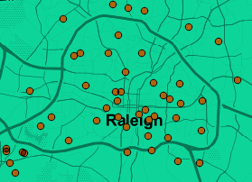
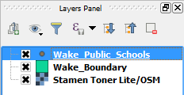

This lesson's project has a layer with Wake public schools. Currently, only the position of each school is represented in the map using a circular marker.

If you analyze the data's attribute table, you will find a capacityto field with the students capacity. In the next steps, we will create proportional symbols using that field.
In the Layers Panel, click the Wake_Public_Schools layer to make it active.
The Wake_Public_Schools layer should be highlighted now.

Click Next step.